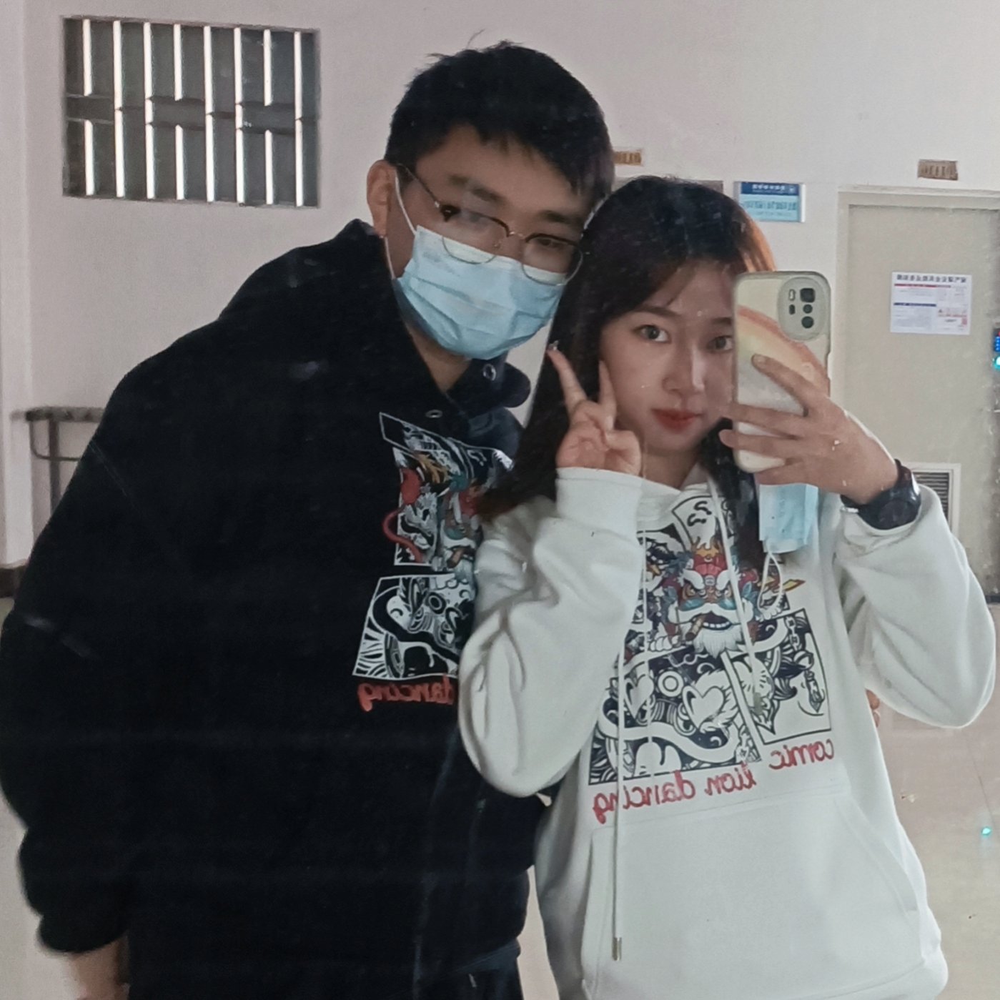

| 姓 名： | 云 凇 |
| 职 业: | 学 生 |
余松平，男，汉族，出生于1997年5月，江西上饶人，中共党员。2020年进入桂林理工大学地球科学学院地质资源与地质工程专业攻读硕士学位。硕士在读期间，以第一作者身份发表中文核心论文一篇，参与发表SCI论文三篇，获得过研究生学业奖学金二等奖及欣羽奖学金（校友奖学金）。
思想端正，学习努力，待人友善，拥有良好的群众基础，其加入中国共产党已有3年，拥有坚定的政治方向，用心向党组织靠拢，以高标准要求自己。由于本科便已成为中共正式党员，在研究生一年级下学期，余松平同志积极竞选党支部委员，并成功当选支部组织委员，用自己的学余时间处理支部相关工作，并努力做好党员发展工作，为党组织输送新鲜血液，至今已经工作一年半。
身为学生，余松平同学认为学习是不能松懈的，时刻提醒自己要以学业为重，在研究生一年级期间，一直本着刻苦勤奋的原则，认真对待每一门课程，在优势学科上主动帮助其他同学，弱势学科上积极向老师请教，期末测评时，各项课程均取得了优异的成绩。各科成绩均高于80分，且学位课平均成绩89.56，总平均成绩89.37，位列专业第一。
关于学习方面，余松平同学认为自己还是有点心得可言的，研究生阶段，学习更加依靠自主性了，而且都或多或少有着大学本科的学习经验和知识底子，往往相同的一门课，有些人底子很差，便开始自暴自弃，而由于余松平同学本科较为努力，相对而言底子会好一点，因此学习起来也更加得心应手一些。但是在底子不好的学科，比如英语，至今未过六级。研究生英语两门课，他积极申请英语课代表，能够上台展示的机会也绝不会错过和应付，这也使得其英语弱项也取得了优秀的成绩。其实“世上无难事，只怕有心人”这句话确实有其独到之处，你只管自己努力，美好总会到来。
作为研究生，科研便成为了第一要务，余松平同学自入学以来便努力学习专业知识，醉心于数值计算及编程，认真完成导师布置的各项任务，在完成一年级课程的同时，也尽可能的学习到更多的专业技能。二年级的时候，他在导师的悉心指导和同门师兄弟的热心帮助下成功发表了一篇中文核心论文，并参与发表的一篇SCI二区论文。大到论文主题方向和框架，小到正文一字一句的修改，英文的推敲，甚至标点符号及单位的检查，都是一篇学术论文成功发表不可缺少的。也许其中过程是枯燥的，但当经过这一艰辛的科研过程，收获的绝不仅仅是一篇论文，更是对个人科研思维的磨砺，这也是为将来的科研和工作奠定基础。
在研究生二年级结束的时候，他跟随导师前往美丽的云南普洱进行野外实习，经历了长时间的锻炼和学习，他不但提高了自己的能力，而且还有了一定的收入，节省了家里的开支。更重要的是在研究生阶段留下了一段宝贵的经历，也为今后的学习和工作奠定了一定的实习基础。
在学生工作方面，余松平同学曾担任桂林理工大学地球科学学院研究生会执行主席、地球科学学院研究生第二党支部组织委员、桂林理工大学研究生常任代表。任职期间，积极配合校研究生会和研究生创新创业中心，组织并参加各类文体活动、学术讲座及社会实践活动，积极组织院级活动十余项，并带领学院研究生会获得校级“优秀研究生会”荣誉称号，并获得许多校院大小赛事奖项。且个人荣获2020-2021年度校级研究生 “优秀学生干部”称号。在党支部书记的指挥下，配合支部副书记及其他支委，妥善完成党支部内党员发展、材料整理及“三会一课”等各项工作，获得学院老师的一致好评。
余松平在生活上，充实而有条理，拥有良好的生活作风，与同学和室友间相处和睦。在科研之余，劳逸结合，积极参加到体育锻炼中，有空便会与同学打打羽毛球，去操场跑跑步，也会参加运动会去突破一下自我。他知道健康是人之一切事物的前提，保持良好的体魄才有更好的精力和时间为国家科学做出贡献。
研究生阶段是人生中一个极为重要的阶段，是未来之路的重要转折点。当回首往事，不因虚度年华而忏悔，也不因碌碌无为而羞愧。年轻人应当用激情点燃科研之火，用青春拼出一个无悔人生。